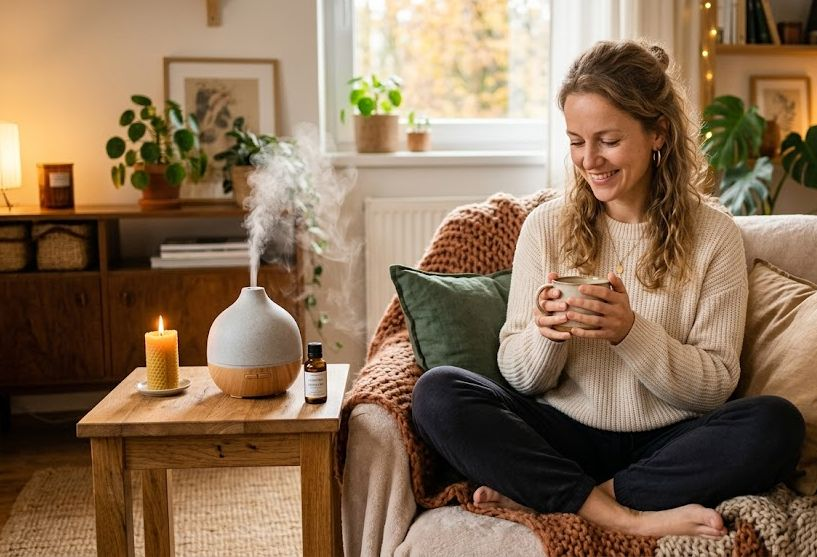
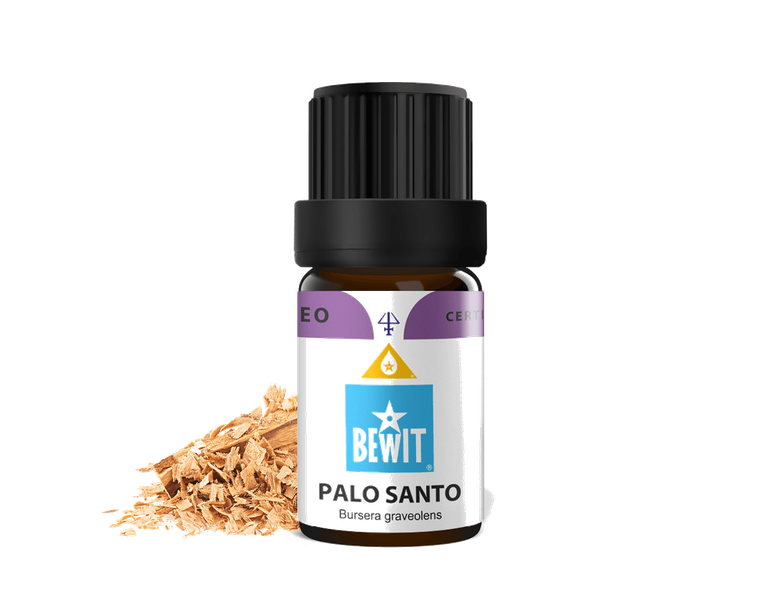
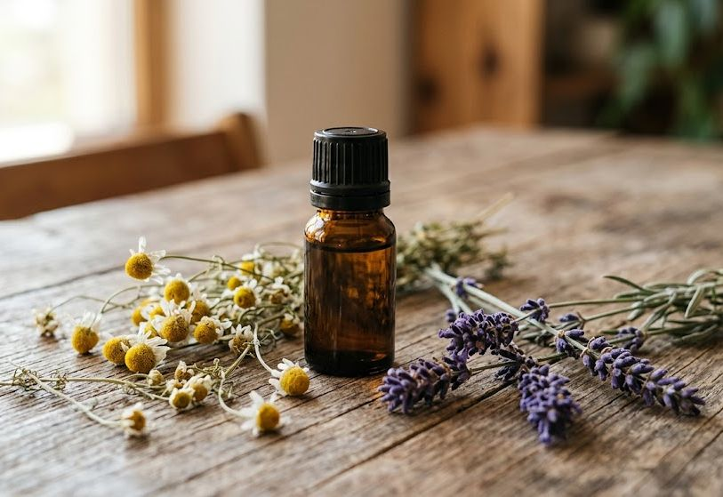

domov, který voní i cítí dobře
Vůně domova ovlivňuje náladu, koncentraci i spánek. Přírodní esence a posvátná dřeva nabízejí způsob, jak prostor nejen provonět, ale i energeticky osvěžit.


Posvátné dřevo z Peru se sladkou, pryskyřičnou a lehce dřevitou vůní. Po staletí používáno šamany pro čištění prostoru, podporu meditace a nastolení vnitřního klidu. V difuzéru provoní celý pokoj a přinese pocit ukotvenosti.
Jak použít: přidejte 5–8 kapek do difuzéru. Vůně je intenzivní — začněte méně a přidejte podle potřeby.
Zjistit více →Jak použít: 3–5 kapek do difuzéru, ideálně při meditaci, józe nebo před spánkem.
Chci klid a čistotuJak použít: 4–6 kapek do difuzéru. Perfektní kombinace s pomerančem nebo bergamotem.
Chci harmoniiJak použít: 5–7 kapek do difuzéru. Skvěle se kombinuje s mátou nebo rozmarýnem.
Chci svěžestJak použít: 4–6 kapek do difuzéru, skvěle voní i v kombinaci s levandulí.
Chci rozjasnit náladuJak použít: 3–5 kapek do difuzéru, ideální večer nebo při práci z domova.
Chci se uzemnitJak použít: 3–4 kapky do difuzéru, méně je někdy více — vůně je intenzivní.
Chci exotickou vůniJak použít: 4–5 kapek do difuzéru, krásně se kombinuje s pomerančem nebo skořicí.
Chci pocit domovaVůně domova je první věc, kterou pocítíme, když přijdeme domů. Malá změna — difuzér s oblíbenou esencí — může proměnit celou atmosféru místnosti. Dopřejte si prostor, ve kterém se cítíte dobře.

Stačí 30–60 minut, poté difuzér vypněte a nechte vůni doznít — nepřetržitý provoz není potřeba a šetří i olej.
Ano, ale vůně se mohou přebíjet — pokud chcete čistý zážitek, používejte je odděleně nebo zvolte podobnou vůňovou rodinu.
Některé oleje (např. citrusové nebo silné pryskyřice) mohou být pro kočky a malé mazlíčky ve vysoké koncentraci nevhodné. Difuzér umístěte tak, aby zvíře mohlo místnost opustit, a sledujte jeho reakci.
Mohlo by vás také zajímat:
🌿 Všechny produkty, které na tomto webu doporučuji, jsou od BEWIT. Jako registrovaný zákazník můžete nakupovat se slevou až 50 % na vybrané produkty.
Registrace u BEWIT zdarma →